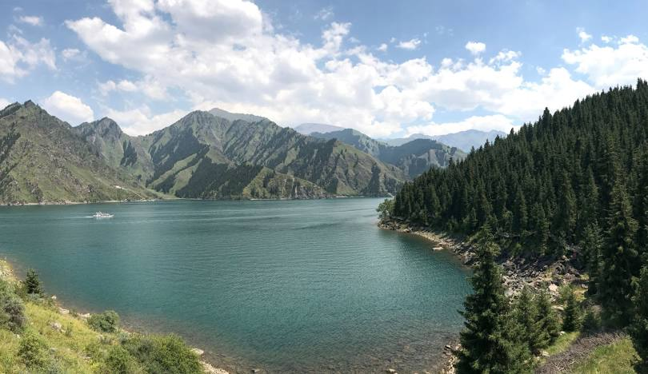

新疆天山天池国家地质公园，是以高山湖泊为中心的自然风景区，地处新疆维吾尔自治区昌吉回族自治州阜康市境内，距阜康市区37千米，距自治区首府乌鲁木齐市97千米。新疆天山天池国家地质公园规划总面积为548平方千米，分8大景区，15个景群，38个景点，是中国西北干旱地区典型的山岳型自然景观，属于典型的大陆性干旱气候。 [1]
随着海拔高度不同可分为冰川积雪带、高山亚高山带、山地针叶林带和低山带。2007年，天山天池被国家旅游局评定为国家5A级旅游景区。 [2]2013年6月5日至6日经中国国土资源部评定为国家地质公园。
